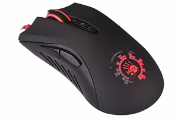

Добро пожаловать на один из крупнейших интернет-магазинов игровых девайсов в СНГ
Получайте бонусы!
Найдите имеющиеся у нас в наличии комплектующие дешевле и получите скидку!
-

A4TECH Bloody A91
Вес — 144 грамма, размеры — 121x65x40 мм. Длина кабеля — 1,8 метра. Помимо привычных правой и левой кнопок, есть подсвечивающееся колёсико, две функциональных кнопки слева, а также три кнопки для переключения режимов работы.
-
Razer DeathAdder
Бесшумные ножки Ultraslick, 7 независимо программируемых кнопок Hyperesponse, настройка чувствительности на лету On-The-Fly Sensitivity, ускорение до 50 G, режим постоянной готовности Always-On.
-

Razer Mantis
Razer Mantis — новое поколение высокоточных игровых ковров, созданных геймерами для геймеров. Ковры изготавливаются из превосходной ткани Fibertek, обеспечивающей высокоточное гладкое перемещение мыши.
-
SteelSeries Apex 300
Дисплей OLED Smart отображает информацию напрямую из игр и приложений, моментальные оповещения из Discord, Tidal и игр, надежные механические игровые переключатели.
-
SteelSeries Arctis
Встроенный регулятор громкости, микрофон с шумоподавлением, режим объемного звучания (surround), подключение: USB, частота воспроизведения 20-20000 Гц.
-
SteelSeries Siberia 650
Модель 650 оснащена прочным и комфортным оголовьем, большими звукоизолирующими чашками с настраиваемой цветной подсветкой, выдвижным микрофоном и звуковой картой с поддержкой Dolby ProLogic II и Dolby Headphone.
-
SteelSeries QCK Heavy Fnatic Edition
QcK Heavy отличается от QcK+ толщиной (6мм против 2мм). Мягкая пористая структура поглощает все неровности, тогда как используя обычный QcK даже маленькая неровность, попавшая под ковер, ощутимо мешает. С Heavy таких проблем не возникнет.
-
Razer Gunnar
Очки от GUNNAR-Razer были разработаны для снижения напряжения глаз и улучшения остроты зрения во время игр. Очки оснащены запатентованной компанией GUNNAR технологией линз i-AMP® в дизайнерской оправе, с ярким брендингом Razer.
-
Razer BlackWidow Chroma v2
Главной особенностью является наличие многоцветной подсветки. Особенностями представленного изделия являются: переключатели Razer с поддержкой Razer Synapse, функция anti-ghosting и защитная оплетка кабеля.
О компании
Наш проект – это, по сути, возможность разделить восторг с как можно большим числом людей. Мы организуем свою работу так, чтобы в каждой упаковке вы получали не только качественный товар напрямую от производителя, но и яркие впечатления. Мы хотим услышать вас, хотим обменяться мнением и подарить вам детскую радость цифрового мира в эпоху интернета вещей. Ради этого мы готовы рисковать, чтобы стать лучшими, стать теми самыми, а не ещё одними и следующими. Ради этого мы затеваем бурные споры за столом и в мессенджерах, ради этого идём работать в праздники, изучаем каждый новый товар и транслируем в блог свежие новости. Это не просто наша работа или наше хобби – это эдакая Hi-Tech Нарния в реальном мире. Есть вещи, которые созданы с умом, любовью и уважением. Они становятся частью вашей жизни, дарят удивительные возможности и памятные моменты. Мы хотим помочь вам найти среди гаджетов, которые каждый день меняют нашу жизнь в корне и в мелочах, свои – те, с которыми не захочется расставаться. В конце концов, у нас есть принципы. Мы – за честность и за доверие. За вдохновение. Мы – за ваше и наше время, за разумный подход и удовольствие от пользования. За вещи, которые сформируют ваш образ жизни.